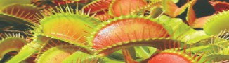
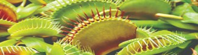
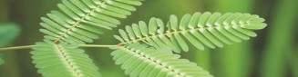
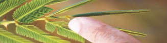
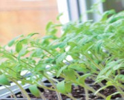
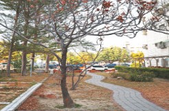

捕蠅草・葉片閉合
較快的反應

前：張開後：閉合捕蟲構造是特化的葉。昆蟲觸碰感覺毛，達到觸發條件後，葉片會閉合。
前：捕蟲葉張開。
先看外形、說說猜想，再按下卡片揭曉。
根的基本工作：吸收水分和礦物質、固定植物。不同形態的根，還能儲藏養分或加強支撐。
根不一定都藏在土裡！榕樹的氣生根露在空中；植物的養分主要由光合作用製造，並不是把土壤當成食物吃。
莖的基本工作：支撐身體、運輸水分和養分。有些莖還能攀附、儲藏，甚至長出新植株。
長在地下的不一定是根。馬鈴薯的塊莖上有「芽眼」，能長出芽，是辨認它為莖的重要線索。
葉的基本工作：多數綠色葉片能行光合作用。葉也可能變得鮮豔、肥厚，或形成刺與捕蟲構造。
捕蟲植物仍會行光合作用。昆蟲提供氮等營養物質，補充生長所需，不是取代陽光。
植物會回應環境：有些受到觸碰後很快改變姿態；有些變化要觀察好幾天，甚至跨越季節。


前：張開後：閉合捕蟲構造是特化的葉。昆蟲觸碰感覺毛，達到觸發條件後，葉片會閉合。
前：捕蟲葉張開。


前：展開後：觸碰後合起碰觸後，小葉會合起來，葉柄也可能下垂。這是植物的反應，不能因此說它有人類的情緒。
前：小葉展開。

幼苗的莖可能朝光源彎曲生長。要持續觀察，不能把幾天的生長當成瞬間轉身。
照片：放在窗邊的幼苗，莖朝光源（窗戶）的方向彎曲生長。

有些植物會隨季節出現葉色改變或落葉。不同植物的變化不相同，也不是每棵樹都在同一時間落葉。
照片：季節改變時，樹上的葉子變色，地上也有許多落葉。
「前／後」是兩張照片的對照，不是同一株植物的連續拍攝；按「還原」只是切回第一張照片，並非植物實際恢復所需的時間。捕蠅草閉合需要符合刺激條件，並不是碰一下就一定會關起來。
每題選一個答案，看看自己的觀察有沒有抓到重點。
準備好了，就從第一題開始。
選擇單人練習，或和同學左右分區、同時比賽。